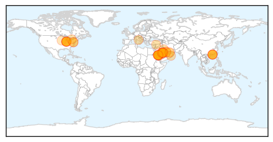
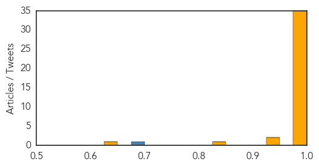
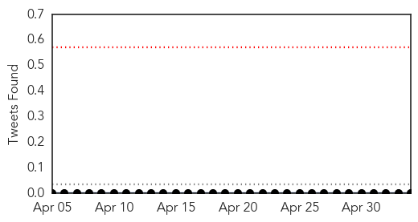

MERS
30-Day Web Trend
26 alerts, 0 warnings

30-Day Twitter Trend
7 alerts, 0 warnings

Article Locations
Article Confidences
Top Articles:
- 1.000
- 1st MERS virus case in U.S concerns California experts
- 1.000
- MERS patient remains in good condition
- 1.000
- MERS Experts Fret About Deadly Virus' Great Unknowns
- 1.000
- Health council’s steps to prevent Mers reassuring
- 1.000
- MERS virus found in United States for first time
- 1.000
- Awqaf issues MERS warning - MERS Coronavirus: FAQs - Kuwait Times
- 1.000
- MERS expert forecasts slowdown in spread, despite new KSA cases
- 1.000
- MERS virus arrives in U.S. from Middle East
- 0.999
- EXCLUSIVE-Specter of SARS weighs on CDC as MERS virus lands in U.S.
- 0.999
- No new cases of MERS reported in U.S., according to Indiana Health Department
- 0.999
- Is this the new SARS? - science
- 0.999
- Exclusive: Specter of SARS weighs on CDC as MERS virus lands in U.S
- 0.999
- Exclusive: Specter of SARS weighs on CDC as MERS virus lands in U.S.
- 0.999
- CDC confirms first US case of MERS virus
- 0.999
- MERS virus death toll in Saudi reaches 111
- 0.999
- SARS Spectre Weighs In As MERS Virus Lands In US
- 0.999
- Indiana Health Dept.: No new cases of MERS reported
- 0.999
- MERS Case in the United States
- 0.999
- Exclusive: Specter of SARS weighs on CDC as MERS virus lands in U.S.
- 0.999
- Exclusive: Specter of SARS weighs on CDC as MERS virus lands in U.S
- 0.999
- Exclusive: Specter of SARS weighs on CDC as MERS virus lands in U.S.
- 0.999
- Farsnews
- 0.999
- First US case of deadly MERS virus confirmed
- 0.998
- New coronavirus case reported in Jordan
- 0.998
- Six more individuals test negative for Mers, says HAAD
- 0.998
- First MERS Case Reported in the US
- 0.998
- Bahrain to launch campaign against MERS virus
- 0.998
- Bahrain on alert to fend off MERS virus amid regional concerns
- 0.997
- Six more individuals test negative for MERS Coronavirus, says Health Authority Abu DhabiHealthcare
- 0.997
- Egypt Warns Against Travel To Saudi Arabia Due To MERS Virus
- 0.995
- First US case of SARS-like virus confirmed
- 0.993
- Passengers in MERS scare as deadly virus confirmed in US
- 0.986
- Saudi Arabia reports 25 new cases of MERS
- 0.978
- Purdue MERS experts working on way to block dangerous virus
- 0.975
- Gulf Daily News Local News Haj alert for young and elderly
- 0.944
- Hajj Age Restriction On Virus Fears
- 0.927
- Irishman being tested after travelling on same plane as US man with MERS virus
- 0.839
- Report: 4 million pigs lost to PEDv - MessengerNews.net
- 0.640
- MoH Smart Clinic highlights Corona Virus on TwitterHealthcare
Top Tweets:
- 0.831
- RT: CDC HAN: Confirmed Middle East Respiratory Syndrome Coronavirus (MERS-CoV) Case in Indiana, 2014 http://t.co/e4AaQDs2wU
Hemmorhagic Fever
30-Day Web Trend
0 alerts, 0 warnings

30-Day Twitter Trend
0 alerts, 0 warnings

Article Locations

Article Confidences

Top Articles:
-
No articles found for May 04, 2014
Top Tweets:
-
No tweets found for May 04, 2014